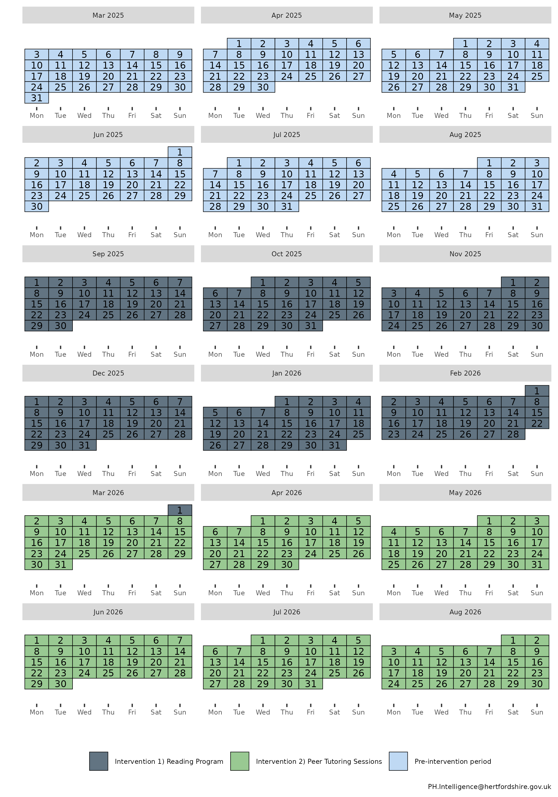
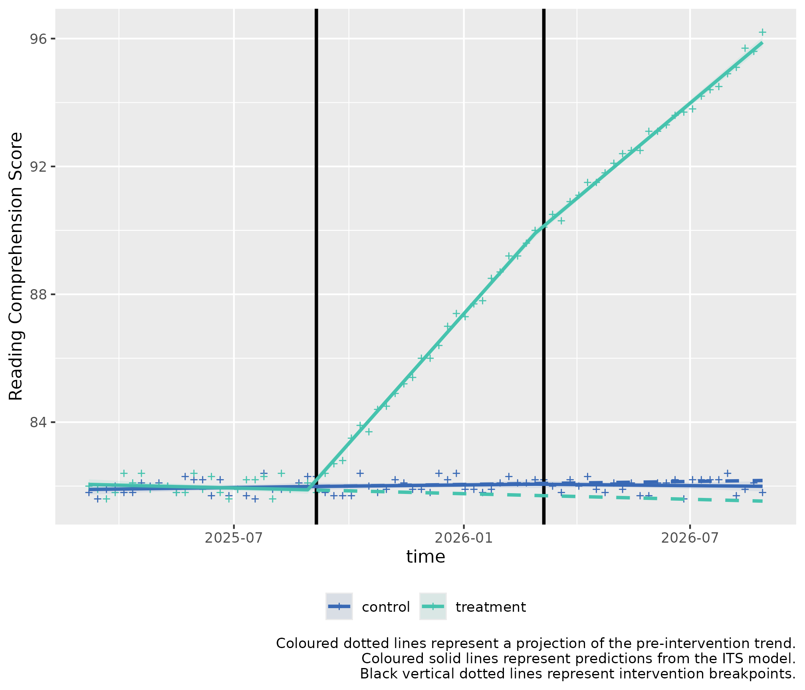

Multiple ITS control introduction for slope change (two-stage)
ITScontrol_demonstration_slope.RmdUsage
This is a basic example which shows you how to solve a common problem with two stage interrupted time series with a control for a slope hypothesis:
Background: Alpine Meadow School (AMS) and Forest Tiger School (FTS) have similar student demographics, including socioeconomic status, ethnicity, and academic performance. Both schools are part of Clarkson County’s public school district.
Alpine Meadow School wants to trial out two new interventions to improve their school’s reading comprehension score, and to compare post intervention results with the pre-intervention score.
Intervention 1: Implementing a New Reading Programme
- Objective: Improve reading comprehension and literacy rates among students.
- Start Date: September 1, 2025
- Duration: 6 months
- Description: The school introduces a new, evidence-based reading program that includes daily reading sessions, interactive reading activities, and regular assessments.
- Measurement: Reading comprehension scores from standardized tests administered weekly.
Intervention 2: Introducing Peer Tutoring Sessions
- Objective: Further enhance reading comprehension and literacy rates.
- Start Date: March 2, 2026 (immediately after the reading program ends)
- Duration: 6 months
- Description: The school implements peer tutoring sessions where older students tutor younger students in reading. These sessions are held twice a week and focus on reading comprehension strategies and practice.
- Measurement: Reading comprehension scores from standardized tests administered and marked weekly on Friday.
Controlled Interrupted Time Series Design (2 stage)
Step 1: Baseline Period
- Duration: 6 months (March 3, 2025 - August 31, 2025)
- Data Collection: Collect baseline data on reading comprehension scores administered weekly.
Step 2: Intervention 1 Period
- Duration: 6 months (September 1, 2025 - March 1, 2026)
- Data Collection: Continue collecting data on reading comprehension scores during the reading program administered weekly.
Step 3: Intervention 2 Period
- Duration: 6 months (March 2, 2026 - August 31, 2026)
- Data Collection: Collect data on reading comprehension scores during the peer tutoring sessions administered weekly.
The school hypothesizes there will be a slope effect for the interventions.
The calendar plot below summarises the timeline of the interventions:

Step 1) Loading data
Sample data can be loaded from the package for this scenario through
the bundled dataset its_data_school.
This sample dataset demonstrates the format your own data should be in.
You can observe that in the Date column, that the dates
are of equal distance between each element, and that there are two rows
for each date, corresponding to either control or
treatment in the group_var variable.
control and treatment each have three periods,
a Pre-intervention period detailing measurements of the
outcome prior to any intervention, the first intervention detailed by
Intervention 1) Reading Programme, and the second
intervention, detailed by
Intervention 2) Peer Tutoring Sessions.
Step 2) Transforming the data
The data frame should be passed to
multipleITScontrol::tranform_data() with
suitable arguments selected, specifying the names of the columns to the
required variables and starting intervention time points.
transformed_data <-
multipleITScontrol::transform_data(df = its_data_school,
time_var = "Date",
group_var = "group_var",
outcome_var = "score",
intervention_dates = as.Date(c("2025-09-05", "2026-03-06")))Returns the initial data frame with a few transformed variables needed for interrupted time series.
#> # A tibble: 156 × 13
#> # Groups: category [2]
#> time category Period outcome x time_index level_pre_intervention
#> <date> <chr> <chr> <dbl> <dbl> <int> <dbl>
#> 1 2025-03-07 treatment Pre-int… 82 1 1 1
#> 2 2025-03-07 control Pre-int… 81.8 0 1 1
#> 3 2025-03-14 treatment Pre-int… 81.9 1 2 1
#> 4 2025-03-14 control Pre-int… 81.6 0 2 1
#> 5 2025-03-21 treatment Pre-int… 81.6 1 3 1
#> 6 2025-03-21 control Pre-int… 81.9 0 3 1
#> 7 2025-03-28 treatment Pre-int… 81.8 1 4 1
#> 8 2025-03-28 control Pre-int… 82 0 4 1
#> 9 2025-04-04 treatment Pre-int… 82.4 1 5 1
#> 10 2025-04-04 control Pre-int… 81.8 0 5 1
#> # ℹ 146 more rows
#> # ℹ 6 more variables: level_1_intervention <dbl>,
#> # level_1_intervention_internal <dbl>, slope_1_intervention <dbl>,
#> # level_2_intervention <dbl>, level_2_intervention_internal <dbl>,
#> # slope_2_intervention <dbl>Step 3) Fitting ITS model
The transformed data is then fit using
multipleITScontrol::fit_its_model(). Required arguments are
transformed_data, which is simply an unmodified object
created from multipleITScontrol::transform_data() in the
step above; a defined impact model, with current options being either
‘slope’, `level, or ‘levelslope’, and the
number of interventions.
fitted_ITS_model <-
multipleITScontrol::fit_its_model(transformed_data = transformed_data,
impact_model = "slope",
num_interventions = 2)
fitted_ITS_modelGives a conventional model output from nlme::gls().
#> Generalized least squares fit by REML
#> Model: reformulate(termlabels = termlabels, response = "outcome")
#> Data: transformed_data
#> Log-restricted-likelihood: -6.415746
#>
#> Coefficients:
#> (Intercept) x time_index
#> 81.8918689038 0.1684906811 0.0036366478
#> slope_1_intervention slope_2_intervention x:time_index
#> -0.0008224051 -0.0053395145 -0.0104209401
#> x:slope_1_intervention x:slope_2_intervention
#> 0.3161441555 -0.0732359132
#>
#> Correlation Structure: ARMA(4,5)
#> Formula: ~time_index | x
#> Parameter estimate(s):
#> Phi1 Phi2 Phi3 Phi4 Theta1 Theta2
#> -0.04681337 -0.97435355 -0.29773087 -0.35723256 0.11056398 1.23972149
#> Theta3 Theta4 Theta5
#> 0.26020519 0.48242891 0.21410072
#> Degrees of freedom: 156 total; 148 residual
#> Residual standard error: 0.2161623Step 4) Analysing ITS model
However, the coefficients given do not make intuitive sense to a lay
person. We can call the package’s
multipleITScontrol::summary_its() function
which modifies the summary output by renaming the coefficients to make
them easier to interpret in the context of interrupted time series (ITS)
analysis.
my_summary_its_model <- multipleITScontrol::summary_its(fitted_ITS_model)
my_summary_its_model#> Generalized least squares fit by REML
#> Model: reformulate(termlabels = termlabels, response = "outcome")
#> Data: transformed_data
#> Log-restricted-likelihood: -6.415746
#>
#> Coefficients:
#> A) Control y-axis intercept
#> 81.8918689038
#> B) Pilot y-axis intercept difference to control
#> 0.1684906811
#> C) Control pre-intervention slope
#> 0.0036366478
#> E) Control intervention 1 slope
#> -0.0008224051
#> I) Control intervention 2 slope
#> -0.0053395145
#> D) Pilot pre-intervention slope difference to control
#> -0.0104209401
#> F) Pilot intervention 1 slope
#> 0.3161441555
#> J) Pilot intervention 2 slope
#> -0.0732359132
#>
#> Correlation Structure: ARMA(4,5)
#> Formula: ~time_index | x
#> Parameter estimate(s):
#> Phi1 Phi2 Phi3 Phi4 Theta1 Theta2
#> -0.04681337 -0.97435355 -0.29773087 -0.35723256 0.11056398 1.23972149
#> Theta3 Theta4 Theta5
#> 0.26020519 0.48242891 0.21410072
#> Degrees of freedom: 156 total; 148 residual
#> Residual standard error: 0.2161623
sjPlot::tab_model(
my_summary_its_model,
dv.labels = "Average School Result",
show.se = TRUE,
collapse.se = TRUE,
linebreak = FALSE,
string.est = "Estimate (std. error)",
string.ci = "95% CI",
p.style = "numeric_stars"
)| Average School Result | |||
|---|---|---|---|
| Predictors | Estimate (std. error) | 95% CI | p |
|
81.89 *** (0.09) | 81.72 – 82.06 | <0.001 |
|
0.17 (0.12) | -0.08 – 0.41 | 0.175 |
|
0.00 (0.00) | -0.01 – 0.01 | 0.451 |
|
-0.00 (0.01) | -0.02 – 0.01 | 0.916 |
|
-0.01 (0.01) | -0.02 – 0.01 | 0.481 |
|
-0.01 (0.01) | -0.02 – 0.00 | 0.128 |
|
0.32 *** (0.01) | 0.29 – 0.34 | <0.001 |
|
-0.07 *** (0.01) | -0.09 – -0.05 | <0.001 |
| Observations | 156 | ||
| R2 | 0.998 | ||
|
|||
The predictor coefficients elucidate a few things:
Pre-intervention period:
At the start of the pre-intervention period, A) Control y-axis intercept represents the modelled starting mark of Forest Tiger School, 81.89.
C) Control pre-intervention slope describes the pre-intervention slope in the control group (0).
D) Pilot pre-intervention slope difference to control describes the difference in the pre-intervention slope in the pilot group with the control group. This coefficient is additive to C) Control pre-intervention slope. I.e. 0 (C) + -0.01 (D) = -0.01 is the pre-intervention slope per x-axis unit in the pilot data.
First intervention:
E) Control intervention 1 slope describes the slope change that occurs at the intervention break point in the control group at the start of the first intervention, compared to it’s pre-intervention period (0).
F) Pilot intervention 1 slope describes the difference in the slope change that occurs at the intervention timepoint in the pilot group for the first intervention compared to the control (0.32).
These slope changes are pertinent to the slope gradients given in the pre-intervention period. Thus, we add the coefficients E) Control intervention 1 slope to C) Control pre-intervention slope: 0 + 0 = 0 is the average increase for each x-axis unit during the first intervention for the control data.
To ascertain the slope for the pilot data, we add to the pre-intervention slope of the pilot data, the coefficients E) Control intervention 1 slope and F) Pilot intervention 1 slope. E (0) + F (0.32) + (C) 0 + D -0.01 (D) = 0.31 is the average increase for each x-axis unit during the first intervention for the pilot data.
To ascertain statistical significance with the first intervention
slope, we call the function’s
multipleITScontrol::slope_difference().
slope_difference(model = my_summary_its_model, intervention = 1)#> ## INTERVENTION 1 ##
#>
#> Slope for treatment per x-axis unit: 0.31
#> Slope for control per x-axis unit: 0
#> Slope difference: 0.31
#> 95% CI: 0.29 to 0.32
#> p-value: <0.001
#> Slope control coefficients: E+C
#> Slope treatment coefficients: E+C+D+F
#>
#> # A tibble: 9 × 3
#> Variable Value_Raw Value_Formatted
#> <chr> <dbl> <chr>
#> 1 Intervention 1 e+ 0 1
#> 2 Slope for treatment 3.09e- 1 0.31
#> 3 Slope for control 2.81e- 3 0
#> 4 Slope difference 3.06e- 1 0.31
#> 5 Lower 95% CI 2.95e- 1 0.29
#> 6 Upper 95% CI 3.16e- 1 0.32
#> 7 p.value 1.06e-101 <0.001
#> 8 Slope treatment coefficients NA E+C+D+F
#> 9 Slope control coefficients NA E+CThis brings up the key coefficients and values needed to compare the slopes of the pilot and control during the first intervention.
We identify that the slope difference between the treatment (Alpine Meadow School) and the control (Forest Tiger School) for the first intervention (Reading Programme) has a slope difference of 0.31 (95% CI: 0.29 - 0.32) per x-axis unit, with a p-value below 0.05, indicating statistical significance.
Second intervention:
I) Control intervention 2 slope describes the slope change that occurs at the intervention break point in the control group at the start of the second intervention (-0.01).
Thus, the modelled slope change in the second intervention is C) Control pre-intervention slope (0) + E) Control intervention 1 slope (0) + I) Control intervention 2 slope (-0.01) = -0.01 is the average cumulative uptake increase for each x-axis unit during the second intervention for the control data.
J) Pilot intervention 2 slope describes the difference in the slope change that occurs at the intervention timepoint in the pilot group for the second intervention compared to the control. (-0.07).
These slope changes are pertinent to the slope gradients given in the pre-intervention and first intervention period. Thus, we add the coefficients C (0) + D (-0.01) + E (0) + F (0.32) + I (-0.01) + J (-0.07) = 0.23 is the average cumulative increase for each x-axis unit during the second intervention for the pilot data.
To ascertain statistical significance with the second intervention
slope, we call the function’s
multipleITScontrol::slope_difference() again, but change
the intervention parameter.
slope_difference(model = my_summary_its_model, intervention = 2)#> ## INTERVENTION 2 ##
#>
#> Slope for treatment per x-axis unit: 0.23
#> Slope for control per x-axis unit: 0
#> Slope difference: 0.23
#> 95% CI: 0.22 to 0.25
#> p-value: <0.001
#> Slope control coefficients: E+C+I
#> Slope treatment coefficients: E+C+D+F+I+J
#>
#> # A tibble: 9 × 3
#> Variable Value_Raw Value_Formatted
#> <chr> <dbl> <chr>
#> 1 Intervention 2 e+ 0 2
#> 2 Slope for treatment 2.30e- 1 0.23
#> 3 Slope for control -2.53e- 3 0
#> 4 Slope difference 2.32e- 1 0.23
#> 5 Lower 95% CI 2.20e- 1 0.22
#> 6 Upper 95% CI 2.45e- 1 0.25
#> 7 p.value 5.09e-75 <0.001
#> 8 Slope treatment coefficients NA E+C+D+F+I+J
#> 9 Slope control coefficients NA E+C+IWe identify that the slope difference between the treatment (Alpine Meadow School) and the control (Forest Tiger School) for the second intervention (Reading Programme) has a slope difference of 0.23 (95% CI: 0.22 - 0.25) per x-axis unit, with a p-value below 0.05, indicating statistical significance. The effect has been attenuated compared to the first intervention, and this is evident from the plot in step 6.
Step 5) Fitting Predictions
We can fit predictions with the created model which project the
pre-intervention period into the post-intervention period by using the
model coefficients using
multipleITScontrol::generate_predictions().
transformed_data_with_predictions <- generate_predictions(transformed_data, fitted_ITS_model)
transformed_data_with_predictionsStep 6) Plotting the results
We can use the predicted values and map the segmented regression lines which compare whether an intervention had a statistically significant difference.
its_plot(model = my_summary_its_model,
data_with_predictions = transformed_data_with_predictions,
time_var = "time",
intervention_dates = as.Date(c("2025-09-05", "2026-03-06")),
y_axis = "Reading Comprehension Score")